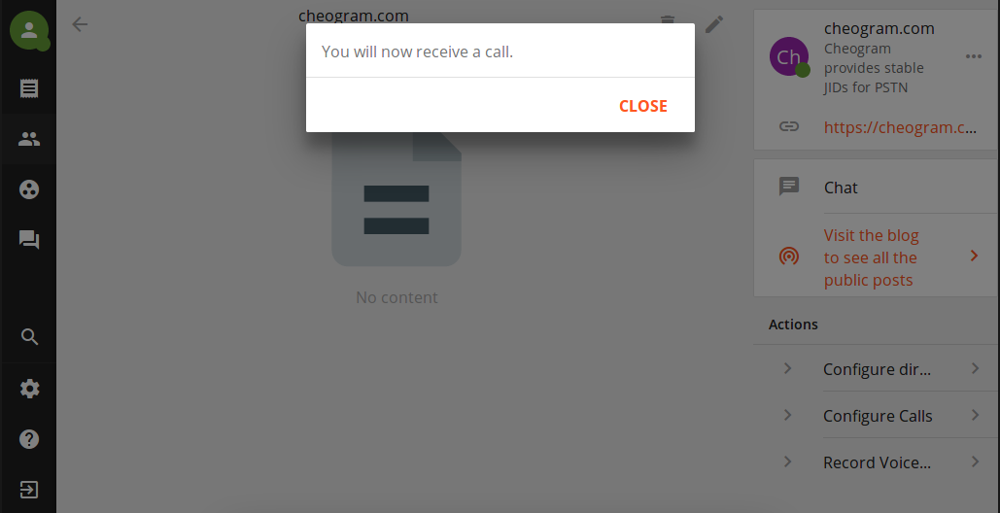
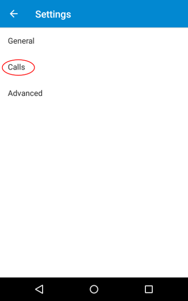

Most phone carriers these days have pretty poor voicemail capabilities. You have to call in to "check" your voicemail, your voicemail box can fill up, and voicemails just play in order without any good way to see what you want.
There have been some advancements in so-called "visual voicemail", but they are not available to all of us. In this post I will show you how to set up an amazing voicemail for your Android-powered device that only requires your carrier support call forwarding (a pretty standard feature, these days). You will be able to get your voicemails instantly (or, if you don't have cell data, whenever you have wifi), see immediately who they are from and keep them sorted by the sender, and also read a text approximation of the content so that you don't always have to listen to it!
All services and technologies referenced in this post are Free Software or Open standards.
You'll need a Jabber (also called XMPP) account
If you already know you have one, and know what your Jabber ID is, you can skip to the Movim login below. For everyone else, I suggest you register with Movim. Do this part from your computer (not from your phone or tablet). If you click that link, you'll see a screen like this:
Fill it in. Your Jabber ID will be whatever username you choose, plus "@movim.eu". Don't forget your Jabber ID or password! Push "Create" and you'll see a page like this:
Click the link that I have circled in red to be taken to the Movim login page, which looks like this:
Enter your full Jabber ID (username you selected followed by "@movim.eu") and password. Congratulations, you are a part of the Jabber network!
Leave the logged-in Movim tab open while you do the next part.
Get a phone number with the voicemail service
The way this voicemail is going to work, you're going to set call forwarding to another number. So you'll get a number with the voicemail service that is in your local area so that the forwarding is a "local call". The numbers cost $2.99 USD/month right now, but the first 30 days is free so you can try it without risk or handing over your credit card or anything like that.
Head to cheogram.com and you'll see something like this:
If one of the displayed phone numbers is in your local area, you can click that. Otherwise click the "..." and you can search by area code for a local number. Write down the number you select, you will need it later. Once you have selected a number, you will see a screen like this:
Fill in your Jabber ID as shown and click "Submit" to continue. The registration process will send you a verification code as a message. So head back to your logged-in Movim tab.
If necessary, click the icon I've circled in red to go to the "Chats" screen. Then, select the conversation I've circled in blue to get your verification code. It will look like this:
That part I've circled in red is your verification code. Cut-and-paste that back into the registration process in the other tab, like so:
Press submit, and scroll all the way to the bottom of the next page. Here you will fill out and verify your real phone number (the one people use to call your cell phone already). We will use this later to record your voicemail greeting. The filled in page should look like this:
When you press "Submit" you will receive a phone call at the phone number you entered. A voice will read you a verification code, which you must type into the form that will look like this:
Press submit, and you're done this part!
Set up the voicemail
Head back to your logged-in Movim tab:
If necessary, click the icon I've circled in red to go to your "Contacts" screen, then click the green checkmark I've circled in blue to allow cheogram.com to talk to you.
Then, click your newly-added Cheogram contact, which I have circled in red.
Now we want to configure the call behaviour of your new number to always go to voicemail. So select the "Configure Calls" action, which I have circled above in red.
We want it to go to voicemail right away, so set it to 0 seconds and press "Submit".
You should see a message indicating the configuration has been saved, as above. You can just click "Close" on this message.
Your voicemail is working now, but the greeting on the mailbox will be a robot voice. Probably you want to record a greeting in your own voice, so click the "Record Voicemail Greeting" action, which I've circled in red above. You will receive a call on your phone, and a message will tell you to say your desired greeting at the beep. When you are done with your greeting, hang up, and it will be set automatically.

Once you've recorded a greeting, just press "Close" to get rid of the notice on your screen. If you want to change your greeting at any time, just select the action again.
Setting up call forwarding
Of course, you need to actually set up your phone so that your carrier will forward calls you don't answer to the voicemail service. Every Android version is slightly different, but I'll walk you through a generic process and it should be fairly similar on your device.
Go to your dialler app, tap the three-dots menu in the top right, and select "Settings". This may also be under "Call Settings" in your global device settings menu.

If necessary, tap "Calls" to go into call settings.
Tap "Call forwarding" to go to forwarding-specific settings.
There are often various call forwarding settings available, set everything (except for "Always forward", you don't want that) to the phone number you selected from the voicemail service, which you wrote down earlier.
Getting Voicemails on the Go
Your voicemail is all set up and working now! But, probably you want to be notified of new voicemails on your cell phone, and not through the Movim web interface on your computer. So you'll need a Jabber app for your phone. I suggest getting Conversations which you can get for a couple bucks from Google Play, Amazon Apps, or F-Droid.
When you first start Conversations, it may ask if you want to create a new account. You already have an account, so choose "Use my own provider" which I have circled in red.
You will then see a login screen, very similar to the Movim login screen. Enter your full Jabber ID (remember: your username plus "@movim.eu") and password, then tap "Next".
That's it! You're all set up to receive your amazing new voicemails directly to your Android phone!